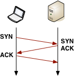
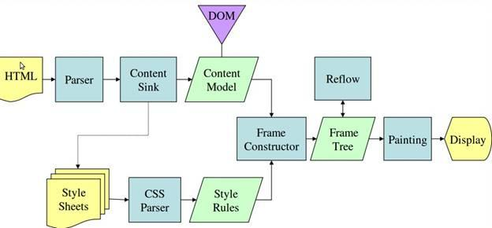
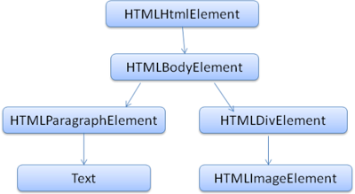

“从输入 URL 到页面加载完成的过程中都发生了什么事情？” 这个问题流传至今，千人千答，但又经久不衰。随着时代的前进，各种“事情”都在变化着，很难有一个标准的答案。但是，作为一名 Web 开发者，我认为有必要了解并总结，这期间到底发生了什么，作为自身知识体系的结构纵贯线。
目录
序曲
“从输入 URL 到页面加载完成的过程中都发生了什么事情？” 这个问题流传至今，千人千答，但又经久不衰。随着时代的前进，各种“事情”都在变化着，很难有一个标准的答案。
但是，作为一名 Web 开发者，我认为有必要了解并总结，这期间到底发生了什么，作为自身知识体系的结构纵贯线。
“事情”过程涉及的知识广度与深度可尽情拓展，不同的开发人员可能有着不同的理解和答案。本文站在 Web 前端开发者 的角度，探索并总结了这些“事情”。这是站在许多巨人的肩膀上，借鉴、吸收、转换的结果。希望看到本篇的你，若有所思，共同交流。
浏览器解析输入
GUI 将输入事件传递到了浏览器中，在这过程中，浏览器可能会做一些预处理，比如 Chrome 会根据历史统计来预估所输入字符对应的网站，比如输入了「ba」，根据之前的历史发现 90% 的概率会访问「 www.baidu.com 」，因此就会在输入回车前就马上开始建立 TCP 链接甚至渲染了，这里面还有很多其它策略。
接着是输入 URL 后的「回车」，这时浏览器会对 URL 进行检查，首先判断协议，如果是 http(s) 就按照 Web 来处理，另外还会对 URL 进行安全检查，然后直接调用浏览器内核中的对应方法，比如 WebView 中的 loadUrl 方法。
DNS 查询
DNS 查询是基于 UDP 来实现的
DNS 查询顺序如下，若其中一步成功则直接跳到建立连接部分：
- 浏览器自身缓存：缓存时间（TTL）不定，由浏览器控制
- 操作系统缓存：系统 DNS 查询调用
- 路由器缓存
- ISP 缓存
- 递归搜索：向域名服务器（
NS）发送请求，直至根域
建立连接
TCP 三次握手（Three-way handshake）：
SYN > SYN-ACK > ACK目的：确认双方互联网络的连通性，不至于浪费资源。主要流程如下：
- 发送方：SYN（Synchronize）
- 接收方：SYN/ACK（Acknowledgement）- 确认信息传达
- 发送方：ACK - 确认接收方在线可收消息，握手结束
- Accept
图示：
 TCP 三次握手（Three-way handshake）
问题：每次 TCP 连接的建立过程都需要增加往返延时，受到客户端与服务端的距离、路由路径等因素影响，建立过程延时与发送的数据量无关。（因此需要适当减少连接数）
建立完毕：如果是
HTTPS连接，则额外增加包含 2次 往返延时的SSL握手。如果SSL会话已经存在缓存，则只需要 1次 往返。
发送 HTTP 请求数据（Request）
请求数据示例
1 | GET / HTTP/1.1 |
请求数据结构
- 报文首部（
GET /index HTTP/1.1）- 方法
- URL
- HTTP 版本
- 空行（CR+LF）
- 报文主体
请求方案
在浏览器内核中会先查看缓存，然后设置 UA 等 HTTP 信息，接着调用不同平台下网络请求的方法。
注意：浏览器和浏览器内核是不同的概念，浏览器指的是 Chrome、Firefox，而浏览器内核则是 Blink、Gecko，浏览器内核只负责渲染，GUI 及网络连接等跨平台工作则是浏览器实现的
请求特点
HTTP请求内容是 纯文本 格式的，所以在TCP的数据段中可以直接分析HTTP的文本HTTP是无连接、无状态的，即HTTP在传输完成后就会断开，并且下一次登录时不会记录上次的登录状态从
HTTP/1.1开始才支持持久连接，即通信一次以后连接不中断：正常为请求一次响应一次: 请求1 -> 响应1 -> 请求2 -> 响应2 -> 请求3 -> 响应3 若采用持久连接请求管线化方式： 请求1 -> 请求2 -> 请求3 -> 响应1 -> 响应2 -> 响应3
使用管线化的条件：
- 服务端需要支持管线化
- 只有
GET和HEAD请求方式可以进行管线化，POST请求有所限制 - 管线化不会影响响应到来的顺序
请求体中的换行符：
Dos/Windows：CR/LFUNIX/Linux：LF（Line Feed）MAC OS：CR（Carriage Return）
服务器处理请求
服务器接收请求数据后，根据请求类型将请求交付给不同的处理模块进行处理（读取、存储、更改等）。 处理完毕后，返回相应的处理结果（文本/图像/数据流等）。
接收服务器响应数据（Response）
响应数据示例
1 | HTTP/1.1 200 OK |
响应数据结构
- 报文首部（
HTTP/1.1 200 OK）- HTTP 版本
- 响应状态码
- 状态码信息
- 空行（CR+LF）
- 报文主体
分析响应数据
- 如果响应中包含 HTTP 重定向，则需要额外重新发起以上整个请求往返循环过程。
- 如果响应中包含
Content-Encoding头的压缩算法，浏览器将根据相应的算法进行内容解码，还原实际数据 - 缓存：
Cache-Control响应头告知浏览器内容缓存时效 - Cookie：
Set-Cookie响应头告知浏览器设置相应的客户端Cookie - 内容类型：
Content-Type响应头告知浏览器响应数据的MIME类型，浏览器根据内部设置，交付给不同的解析器去解析数据（解析或下载等）。响应的资源一般是指HTML文档，也可以是PDF、图片或其他的类型。
延时分析
以最糟糕的典型宽带连接为例（忽略本地缓存）：
- DNS 解析
- TCP 握手 (1次 RTT)
- SSL 握手 (2次 RTTs)
- 发送请求到服务器
- 服务器处理
- 服务器发送相应到客户端
另外：
- 如果服务端响应内容不符合最初的 TCP 拥塞窗口（Congestion Window）（4-15KB），则需要更多额外的往返操作延时
- 如果在建立 SSL 连接过程中，证书不存在，或者需要在线证书状态检查（OCSP）（Online Certificate Status Check），都需要额外建立一次 TCP 连接，这会增加上千毫秒的额外延时
解析并渲染页面
深入了解：How Browsers Work
主流程
流程图：
1 | st=>start: 开始 |
步骤：
构建渲染树（Render Tree）：根据 DOM 和 CSSOM 树渲染，不可见元素不被会渲染
 构建渲染树（Render Tree）
构建渲染树（Render Tree）布局（Layout）：CPU 根据渲染树布局计算元素的具体位置和大小，转换成绝对像素，并且根据样式，分割成多个独立的渲染层（Layers），将每一层对应到位图中
绘制（Paint）：GPU 根据每个渲染层（Layers）的位图绘制每个点，即像素填充,并且将所以渲染层缓存，如果下次页面变动但是渲染层没变就不会触发重绘。
层级合成（Compositing）：顾名思义，即处理多层渲染层之间的关系，将其合成为一个完整的页面。
呈现引擎（Rendering Engine）
负责显示请求的内容。如果请求的内容是 HTML，它就负责解析 HTML 和 CSS 内容，并将解析后的内容显示在屏幕上。
默认情况下，呈现引擎可显示 HTML 和 XML 文档与图片。通过插件（或浏览器扩展程序），还可以显示其他类型的内容；例如，使用 PDF 查看器插件就能显示 PDF 文档。
主流程示例
Webkit：Safari / Chrome WebKit 呈现引擎主流程
WebKit 呈现引擎主流程Gecko：Firefox Gecko 呈现引擎主流程
解析（Parsing）
概述
解析文档是指将文档转化成为有意义的结构，也就是可让代码理解和使用的结构。解析得到的结果通常是代表了文档结构的节点树，它称作解析树或者语法树。
1 | st=>start: 源代码（Source Code） |
词法分析（Lexical Analysis）
词法分析是将输入内容分割成大量标记的过程。标记是语言中的词汇，即构成内容的单位。在人类语言中，它相当于语言字典中的单词。
词法分析工具：词法分析器（有时也称为标记生成器），负责将输入内容分解成一个个有效标记。词法分析器知道如何将无关的字符（比如空格和换行符）分离出来。
语法分析（Syntax Aalysis）
语法分析是应用语言的语法规则的过程。
语法分析工具：解析器，负责根据语言的语法规则分析文档的结构，从而构建解析树。
迭代转换
解析是一个迭代的过程。通常，解析器会向词法分析器请求一个新标记，并尝试将其与某条语法规则进行匹配。如果发现了匹配规则，解析器会将一个对应于该标记的节点添加到解析树中，然后继续请求下一个标记。
如果没有规则可以匹配，解析器就会将标记存储到内部，并继续请求标记，直至找到可与所有内部存储的标记匹配的规则。如果找不到任何匹配规则，解析器就会引发一个异常。这意味着文档无效，包含语法错误。
翻译（Translation）
翻译是指将输入文档转换成另一种格式。编译就是这样一个例子。编译器可将源代码编译成机器代码，具体过程是首先将源代码解析成解析树，然后将解析树翻译成机器代码文档。
解析 HTML（HTML Parser）
语法分析
HTML 无法用常规的自上而下或自下而上的解析器进行解析。 HTML 的特点是：
- 语言的宽容本质。
- 浏览器历来对一些常见的无效 HTML 用法采取包容态度。
- 解析过程需要不断地反复。源内容在解析过程中通常不会改变，但是在 HTML 中，脚本标记如果包含
document.write，就会添加额外的标记，这样解析过程实际上就更改了输入内容。
HTML5 规范详细地描述了解析算法。此算法由两个阶段组成：标记化 和 树构建。
浏览器具有很好的容错机制，会纠正任何无效内容，然后继续工作。
生成 DOM
解析的结果是 DOM（Document Object Model），代表 HTML 文档与外部 HTML 元素的接口（如 JavaScript）。
HTML 文本示例：
1 | <html> |
DOM 树示例：
 解析 HTML 构建 DOM 树
解析样式（Style）
样式的来源
- 外部样式表
- inline 样式属性及类似内容
- HTML 可视化属性（映射到相关的样式规则）（例如
bgcolor属性）
样式表的来源
- 浏览器的默认样式表
- 网页提供的样式表
- 浏览器用户提供的用户样式表
CSS 解析器（CSS parser）
样式表的加载应用虽然不会更改 DOM 树，但可能会影响脚本对文档内容信息获取的结果，因此需要考虑等待样式表并停止文档解析，但并非一致。
- Firefox 在样式表加载和解析的过程中，会禁止所有脚本。
- 而对于 WebKit 而言，仅当脚本尝试访问的样式属性可能受尚未加载的样式表影响时，它才会禁止该脚本。
CSS 语法分析转换：
 CSS 语法分析转换
CSS 语法分析转换
样式计算
计算流程：
- 划分结构。结构中的属性都是继承的或非继承的。继承属性如果未由元素定义，则继承自其父代；
- 使用规则树计算样式上下文；
- 处理规则，简化匹配；
- 按照规则排列层叠顺序，应用属性。
解析脚本（Script）
内嵌脚本
解析器遇到 <script> 标记时，阻塞 DOM 的构建，立即解析并执行脚本。 文档的解析将停止，直到脚本执行完毕。
外链脚本
解析器遇到外部引用脚本，那么 DOM 解析过程会停止，发起一个网络请求，直到 同步 抓取资源完成后再继续解析 HTML 构建 DOM。
而当前新式浏览器做了优化，此时会继续下载文档并解析，再次遇到脚本引用时，会新增请求，并行 下载脚本（浏览器对并行个数有限制）。但是最终的执行顺序是按照 HTML 文档的脚本顺序先后执行的，同样也会阻塞其他资源的下载。
优化
此模型已经使用了多年，也在 HTML4 和 HTML5 规范中进行了指定。 可以将脚本标注为 defer，这样它就不会停止文档解析，而是等到解析结束才执行。HTML5 增加了一个选项，可将脚本标记为异步（async），以便由其他线程解析和执行。
解析其他资源
其他资源，比如图像（img）等内嵌网络资源，并不会阻塞 DOM 的转换，浏览器仅仅发送额外的请求获取资源，然后继续执行后面的操作，不需等待请求返回。让资源返回后，只需把相应的内容插入到 DOM 树中相应位置即可。
预解析
WebKit 和 Firefox 都进行了这项优化。 在执行脚本时，其他线程会解析文档的其余部分，找出并加载需要通过网络加载的其他资源。 通过这种方式，资源可以在并行连接上加载，从而提高总体速度。 请注意，预解析器不会修改 DOM 树，而是将这项工作交由主解析器处理； 预解析器只会解析外部资源（例如外部脚本、样式表和图片）的引用。
解析完毕
浏览器会将文档标注为 交互状态，并开始解析那些处于 deferred 模式的脚本，也就是那些应在文档解析完成后才执行的脚本。然后，文档状态将设置为 “完成”，一个 “加载” 事件将随之触发。
构建呈现树（Render Tree）
在 DOM 树构建的同时，浏览器还会构建另一个树结构：呈现树。 这是由可视化元素按照其显示顺序而组成的树，也是文档的可视化表示。 作用：让按照正确的顺序绘制内容。
呈现树和 DOM 树的关系
呈现器是和 DOM 元素相对应的，但并非一一对应。 非可视化的 DOM 元素不会插入呈现树中，例如 <head> 元素。如果元素的 display 属性值为 none，那么也不会显示在呈现树中（但是 visibility 属性值为 hidden 的元素仍会显示）。 有一些 DOM 元素对应多个可视化对象。例如 <select>
 呈现树和 DOM 树的关系
呈现树和 DOM 树的关系
初始容器 block 为 viewport，而在 WebKit 中则为 RenderView 对象
渐进式处理
WebKit 使用一个标记来表示是否所有的顶级样式表（包括 @imports）均已加载完毕。如果在附加过程中尚未完全加载样式，则使用占位符，并在文档中进行标注，等样式表加载完毕后再重新计算。
布局（Layout）
呈现器在创建完成并添加到呈现树时，并不包含位置和大小信息。计算这些值的过程称为布局或重排。
布局是一个基于流的递归的过程。它从根呈现器（对应于 HTML 文档的 <html> 元素）开始，然后递归遍历部分或所有的框架层次结构，为每一个需要计算的呈现器计算几何信息。
全局布局：
- 影响所有呈现器的全局样式更改（例如全局字体大小）。
- 屏幕大小调整。
增量布局：异步执行，只对
dirty呈现器进行布局（这样可能存在需要进行额外布局的弊端）。当呈现器为dirty时，会异步触发增量布局
绘制（Paint）
在绘制阶段，系统会遍历呈现树，并调用呈现器的 paint 方法，将呈现器的内容显示在屏幕上。绘制工作是使用用户界面基础组件完成的。
- 全局绘制：绘制整个呈现树
- 增量绘制：部分呈现器发生了更改，但是不会影响整个树。更改后的呈现器将其在屏幕上对应的矩形区域设为无效，这导致 OS 将其视为一块“dirty 区域”，并生成“paint”事件
呈现树的绘制顺序：
- 背景颜色
- 背景图片
- 边框
- 子代
- 轮廓
参考：CSS2 绘制顺序规范
动态变化
在发生变化时，浏览器会尽可能做出最小的响应。
- 颜色改变后，只会对该元素进行重绘。
- 位置改变后，只会对该元素及其子元素（可能还有同级元素）进行布局和重绘。
- 添加 DOM 节点后，会对该节点进行布局和重绘。
- 一些重大变化（例如增大“html”元素的字体）会导致缓存无效，使得整个呈现树都会进行重新布局和绘制。
呈现引擎和事件循环（Event Loop）
呈现引擎采用了单线程。几乎所有操作（除了网络操作）都是在单线程中进行的。在 Firefox 和 Safari 中，该线程就是浏览器的主线程。而在 Chrome 浏览器中，该线程是标签进程的主线程。 网络操作可由多个并行线程执行。并行连接数是有限的（通常为 2 至 6 个，以 Firefox 3 为例是 6 个）。
浏览器的主线程是 事件循环。 它是一个 无限循环，永远处于接受处理状态，并等待事件（如布局、绘制、用户点击、系统事件等）发生，并进行处理。